<mat-sidenav-container class="sidenav-container">
  <mat-sidenav #drawer class="sidenav" fixedInViewport [attr.role]="(isHandset$ | async) ? 'dialog' : 'navigation'" [mode]="(isHandset$ | async) ? 'over' : 'side'"
      [opened]="(isHandset$ | async) === false">
      <div>
        <div class="container-header-menu">
          <h1 class="title">HOME HEAL</h1>
        </div>
        <div class="container-info-user">
          
          <h3 class="nombre-user">{{user?.name}}</h3>
          <p class="rol-name">{{user?.rol?.name}}</p>
        </div>
      </div>
    <mat-nav-list class="lista-opciones"  *ngFor="let menu of user?.menus; let last = last">
      <a class="opcion" (click)="setLocation(menu)"  mat-list-item routerLink={{menu.link}}>
        <div class="icon-title">
          <div class="icon"><i class={{menu.icon}}></i></div>
          {{menu.title}}
        </div>

      </a>
      <hr *ngIf="last" class="ultimo-menu-border">
    </mat-nav-list>
    <div class="footer-sidenav">
        <app-button type="secondary" icon="fa-solid fa-user" text="CUENTA"></app-button>
        <app-button type="secondary" icon="fa-solid fa-right-from-bracket" text="SALIR" (click)="logout()"></app-button>
    </div>
  </mat-sidenav>
  <mat-sidenav-content class="content">
    <mat-toolbar  class="header" color="primary">
      <button
        type="button"
        aria-label="Toggle sidenav"
        mat-icon-button
        (click)="drawer.toggle()"
        *ngIf="isHandset$ | async">
        <mat-icon aria-label="Side nav toggle icon">menu</mat-icon>
      </button>
      <div class="logo">
        
      </div>
      <div class="location">
          {{location}}
      </div>
    </mat-toolbar>
    <router-outlet></router-outlet>
  </mat-sidenav-content>
</mat-sidenav-container>
